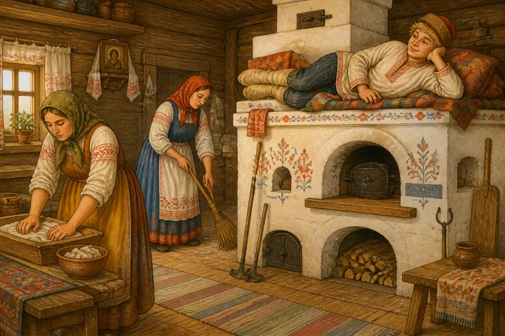
Жил да был старик, и было у него три сына — два умных, а третий, Емеля, — дурак.
Два старших брата работают, а Емеля весь день на печке лежит да баклуши бьёт. Уехали раз братья на базар, а невестки давай Емелю просить:
— Емеля, сходи за водой.
А он им с печки:
— Неохота.
— Сходи, Емеля, а не то братья воротятся, осерчают.
— Ну, да ладно, так и быть, схожу за водой.
Слез Емеля с печки, обулся, оделся, взял вёдра да топор и пошёл на речку.
Проделал Емеля топором во льду прорубь, наполнил вёдра студёной водицей, а сам в воду смотрит.
Глядь — а в проруби щука!
Изловчился Емеля да и ухватил зубастую рыбину.
— Вот ушица будет славная!
А щука вдруг возьми да и скажи ему человеческим голосом:
— Не губи меня, Емелюшка,
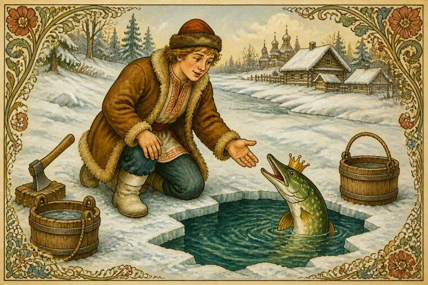
отпусти, я тебе ещё пригожусь.
А Емеля смеётся:
— На что же ты мне пригодишься? Нет, лучше я тебя домой отнесу, велю невесткам уху сварить.
А щука ему снова:
— Отпусти меня, Емелюшка, я тебе исполню всё, что ни пожелаешь.
— Ну ладно, щука, только ты докажи сначала, что не обманываешь. Сделай так, чтобы вёдра сами домой пошли, и вода бы не расплескалась...
Щука отвечает:
— Хорошо, только перед тем, как загадать желание, скажи волшебные слова: «По щучьему веленью, по моему хотенью».
Емеля и говорит:
— По щучьему веленью, по моему хотенью — ступайте, вёдра, домой...
Только сказал — вёдра сами и отправились в гору. Опустил Емеля щуку в прорубь и пошёл за вёдрами.
Идут вёдра по деревне, народ дивится,
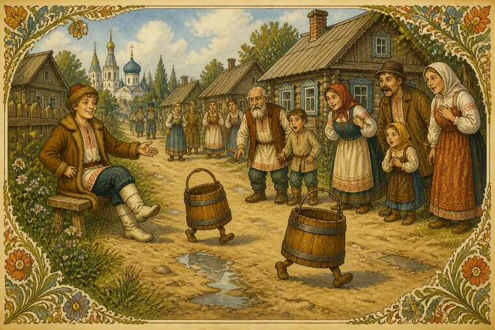
а Емеля идёт сзади, посмеивается. Зашли вёдра в избу и сами стали на лавку. А Емеля снова полез на печь.
Прошло немного времени, и невестки снова подступили к нему:
— Емеля, наколи дров.
— Неохота.
— Наколи, Емеля, а не то братья воротятся, осерчают.
— Ну, да ладно, так и быть, наколю дров. По щучьему веленью, по моему хотенью — поди, топор, наколи дров, а вы, дрова, — сами в избу ступайте и в печь кладитесь...
Только сказал — топор скок из-под лавки — и на двор и давай дрова колоть, а дрова сами в избу идут
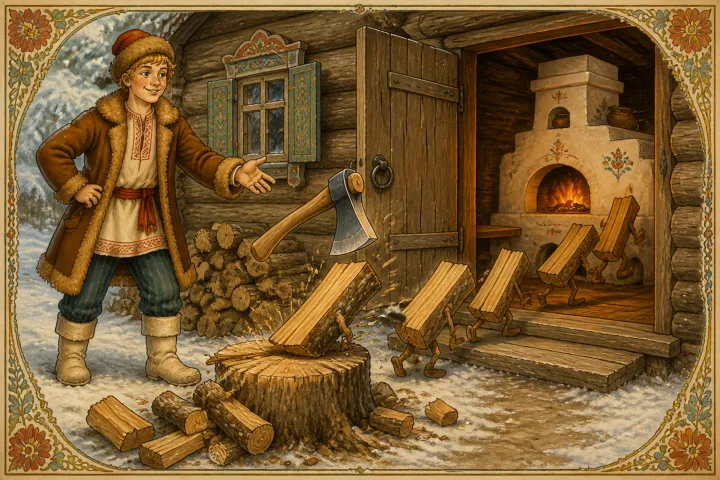
и в печь лезут.
Прошло ещё немного времени, и опять невестки Емелю просят:
— Емеля, дрова закончились. Съезди в лес, наруби.
А он им с печки:
— Неохота.
— Съезди, Емеля, а не то братья воротятся, осерчают.
— Ну, да ладно, так и быть, съезжу в лес за дровами.
Слез Емеля с печи, обулся, оделся. Взял верёвку и топор, вышел на двор и сел в сани:
— Бабы, отворяйте ворота!
А невестки ему говорят:
— Что ж ты, дурень, сел в сани, а лошадь не запряг?
— А не надо мне лошади.
Невестки отворили ворота, а Емеля шепчет саням:
— По щучьему веленью, по моему хотенью — поезжайте, сани, в лес...
Только сказал, как сани поехали, да так быстро, что и на лошади не угнаться.
Ехать пришлось через деревню, и Емелины сани много народу по пути помяли,
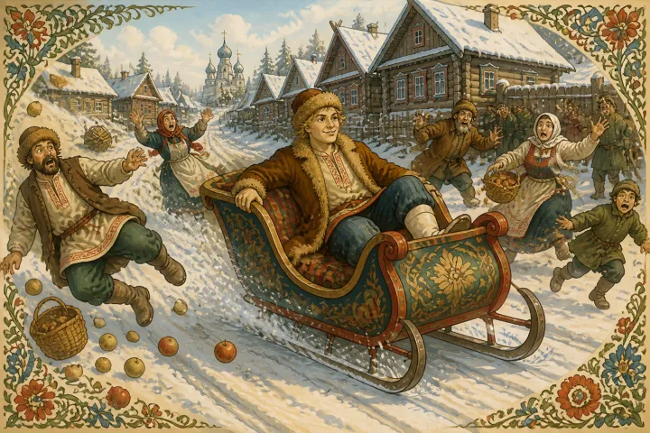
многим бока поотбивали, многим шишки понаставили. Осерчал народ на Емелю, кричит на него, бранится.
А Емеля и в ус не дует, знай себе сани погоняет.
Приехал в лес и говорит:
— По щучьему веленью, по моему хотенью — топор, наруби дровишек посуше, а вы, дровишки, сами валитесь в сани,
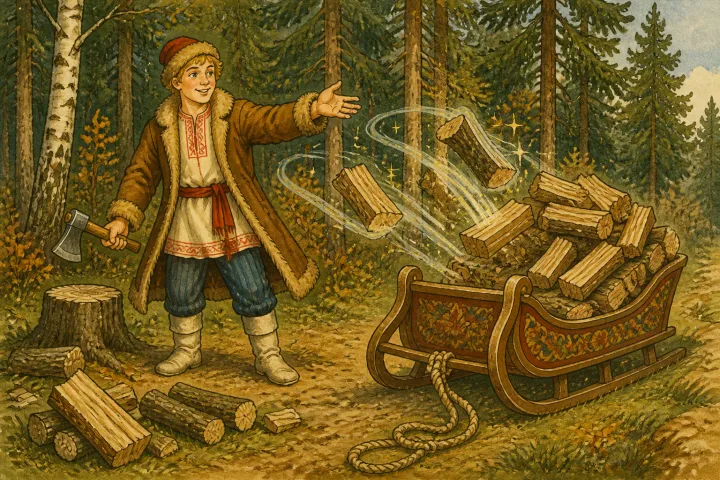
сами вяжитесь...
Начал топор рубить сухие дерева, а дровишки сами в сани валятся и верёвкой вяжутся. Скоро набрался целый воз дров. А потом Емеля велел топору вырубить себе тяжёлую дубину, сел на воз и говорит:
— По щучьему веленью, по моему хотенью — поезжайте, сани, домой...
И помчались сани домой, да резвее прежнего. Проезжает Емеля по деревне, где давеча народу много помял, а там его уже дожидаются. Ухватили Емелю и тащат с возу, бранят и колотят.
Видит Емеля, что плохо дело, и шепчет себе под нос:
— По щучьему веленью, по моему хотенью — ну-ка, дубинка, намни им бока...
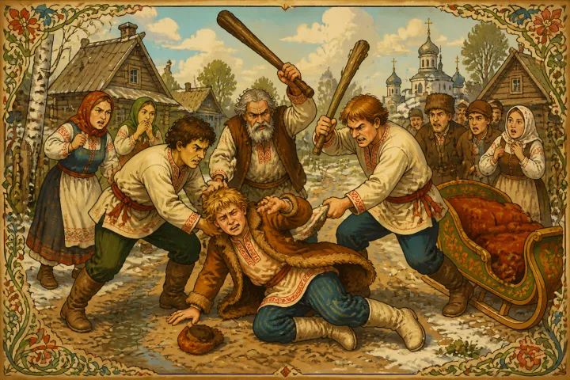
Дубина скок с возу и давай народ охаживать, да так, что все и разбежались. А Емеля приехал домой и опять на любимую печь залез.
Вскорости весть о Емелиных проделках дошла до самого Царя-батюшки. Призвал он к себе офицера и велел ему доставить Емелю во дворец.
Входит офицер в Емелину избу
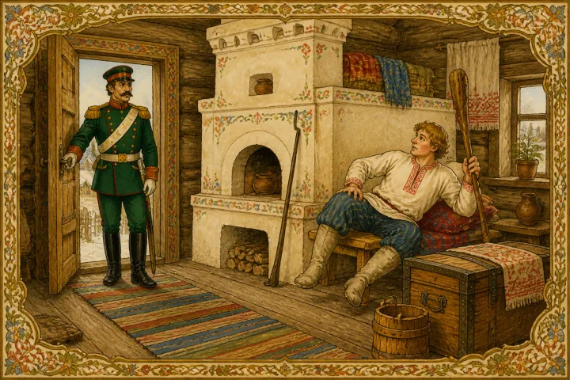
и спрашивает:
— Ты — Емеля-дурак?
А Емеля ему с печки:
— А тебе на что?
— Одевайся поживее, я тебя к Царю повезу.
— Неохота.
Рассердился офицер и как стукнет Емелю по макушке.
А Емеля шепчет себе под нос:
— По щучьему веленью, по моему хотенью — дубина, намни ему бока...
Дубина скок из-под лавки и давай офицера колотить. Насилу тот ноги унёс. Удивился Царь, призвал к себе самого главного вельможу и говорит:
— Доставь ко мне во дворец Емелю-дурачка, а не то голову с плеч сниму!
Накупил самый главный вельможа изюму, черносливу, пряников, приехал к Емелиной избе и давай его невесток расспрашивать, что он, дескать, любит.
— Наш Емеля любит, когда его ласково попросят да красный кафтан посулят.
Самый главный вельможа дал Емеле изюму, черносливу, пряников и говорит:
— Емелюшка, чего без толку на печи лежать? Поедем к Царю.
— А мне и тут тепло...
— Емелюшка, у Царя тебя накормят-напоют.
— Неохота.
— Емелюшка, Царь тебе красный кафтан подарит да шапку с сапогами впридачу.
Емеля подумал-подумал и говорит:
— Ну, да ладно, так и быть, поеду к Царю. Ты ступай вперёд, а я за тобой следом поеду.
Уехал вельможа, а Емеля говорит:
— По щучьему веленью, по моему хотенью — поезжай-ка, печь, к Цареву дворцу...
Затрещали в избе углы, заскрипела крыша, отъехала стена, печь выкатилась во двор и поехала
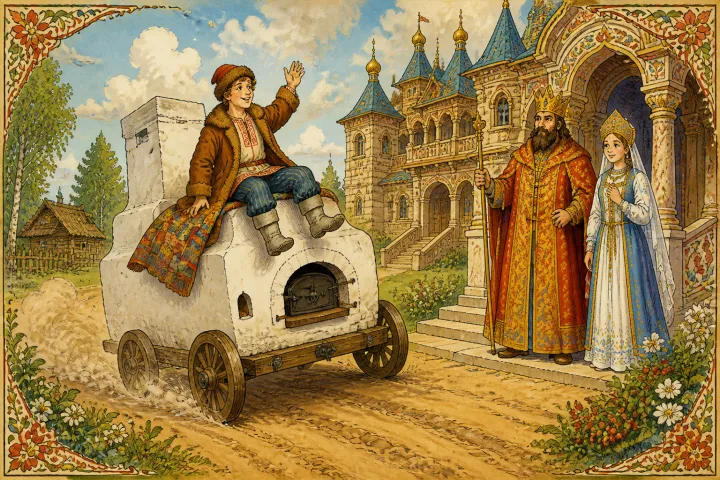
по дороге прямо к Царю.
Царь глядит в окно, дивится:
— Что за чудо такое?
А самый главный вельможа ему отвечает:
— А это Емеля-дурак на печи к тебе едет.
Вышел Царь на крыльцо:
— Что-то, Емеля, на тебя много жалоб! Мол, большое число народу ты подавил.
— А чего они под сани лезли?
В это время в окно на него Царская дочь глядела — Марья-Царевна.
Увидал её Емеля и шепнул себе под нос:
— По щучьему веленью, по моему хотенью — полюби меня, Царская дочь...
И добавил:
— А ты, печь, вези меня назад домой...
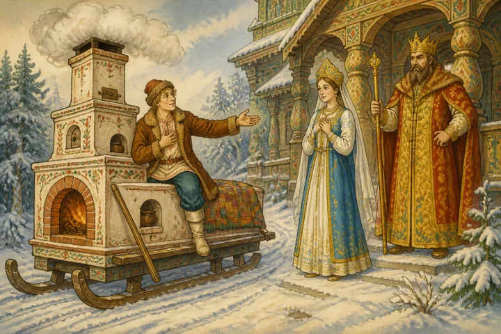
Повернулась печь и поехала домой, вкатилась
в избу и стала на прежнее место.
Емеля опять лежит-полёживает да баклуши бьёт.
А у Царя во дворце крик да слёзы: Марья-Царевна по Емеле сохнет, жить без него не может, молит батюшку, чтобы выдал он её за Емелю замуж. Тут Царь забедовал, затужил.
Призвал он к себе самого главного вельможу и говорит:
— Ступай сию же минуту за Емелей, доставь его ко мне, а не то голову с плеч сниму!
Накупил самый главный вельможа сладких вин да закусок разных, приехал к Емеле и давай его сластями потчевать.
Наелся Емеля, напился, захмелел и лёг спать. А вельможа положил его в сани и повёз к Царю.
Царь тотчас велел прикатить большую бочку с железными обручами и посадить в неё Емелю-
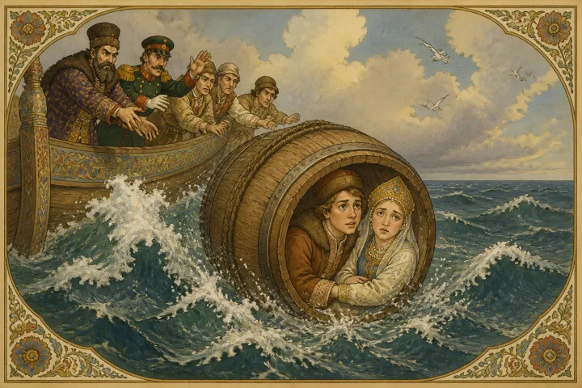
дурака и Марью-Царевну. Потом бочку закрыли крышкой, засмолили и бросили в море.
Много ли времени прошло, мало ли, но проснулся Емеля. Видит — темно и тесно.
— Где это я?
А в ответ слышит:
— Скучно и тошно, Емелюшка! Нас в бочку засмолили да в сине море бросили.
— А ты кто?
— Я — Марья-Царевна.
А Емеля шепнул себе под нос:
— По щучьему веленью, по моему хотенью, — ветры буйные, выкатите бочку на сухой бережочек, на жёлтый песочек...
Ветры буйные подули, море заволновалось, запенилось, выбросило бочку на сухой бережочек, на жёлтый песочек. Вылезли из бочки пленники, а Марья-Царевна говорит:
— Где же мы будем жить, Емелюшка? Построй какую ни на есть избушку.
— Неохота.
А она его ещё пуще прежнего просит, ласковые слова говорит.
— Ну, да ладно, так и быть, построю.
И под нос себе шепчет:
— По щучьему веленью, по моему хотенью — выстройся каменный дворец с золотой крышей...
Только сказал — появился каменный дворец
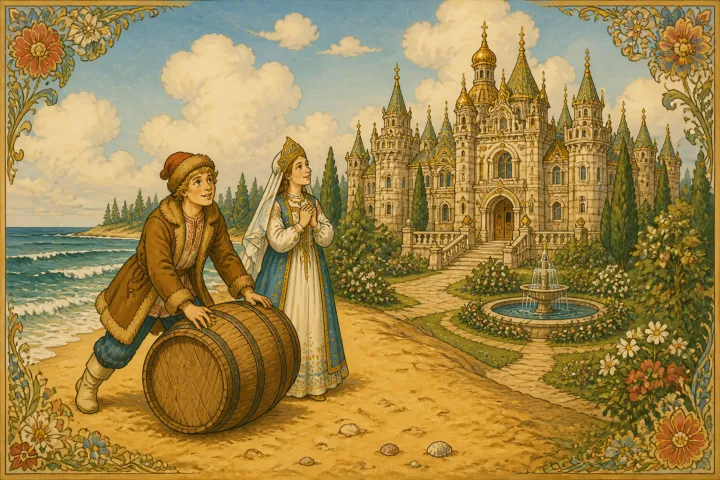
с золотой крышей. Кругом — зелёный сад: цветы цветут и птицы поют. Марья-Царевна с Емелей вошли во дворец, сели у окошечка.
— Емелюшка, а нельзя ли тебе красавцем стать?
Тут Емеля недолго думал:
— По щучьему веленью, по моему хотенью — стать мне добрым молодцем, писаным красавцем...
И стал Емеля таким, что ни в сказке сказать, ни пером описать.
А в ту пору Царь ехал на охоту и видит — стоит дворец, где раньше ничего не было.
— Это что за невежа без моего дозволения на моей земле дворец поставил?
Побежали послы, стали под окошком, спрашивают.
Емеля им отвечает:
— Просите Царя ко мне в гости, я сам ему скажу.
Приехал Царь в гости.
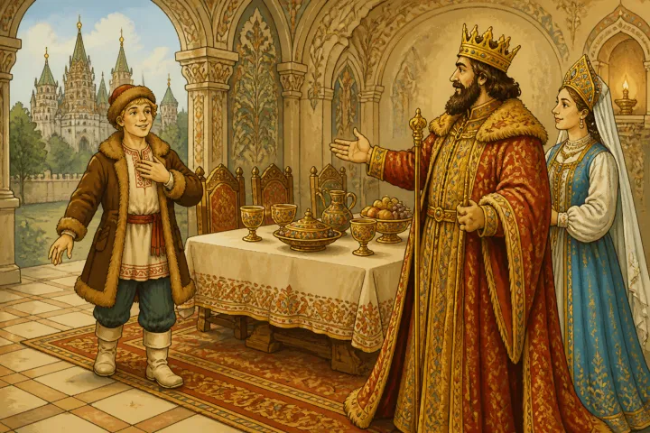
Емеля его встречает, ведёт во дворец, сажает за стол. Начинают они пировать.
Царь ест, пьёт и никак не надивится:
— Кто же ты такой, добрый молодец?
— А помнишь ли ты Емелю-дурака — как приезжал к тебе на печи, а ты велел его со своей дочкой в бочку засмолить, в море бросить? Я — тот самый Емеля. Захочу — на всё твоё царство разор наведу.
Испугался Царь несказанно, стал прощенья просить:
— Женись на моей дочери, Емелюшка, бери моё царство, только не губи меня, старика!
На том и сошлись. И устроили пир на весь мир. Женился Емеля на Марье-Царевне и стал царствовать. Тут и сказке конец, а кто слушал — молодец.
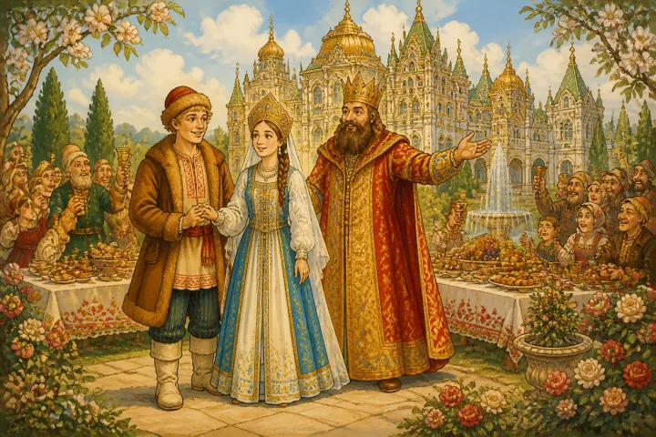